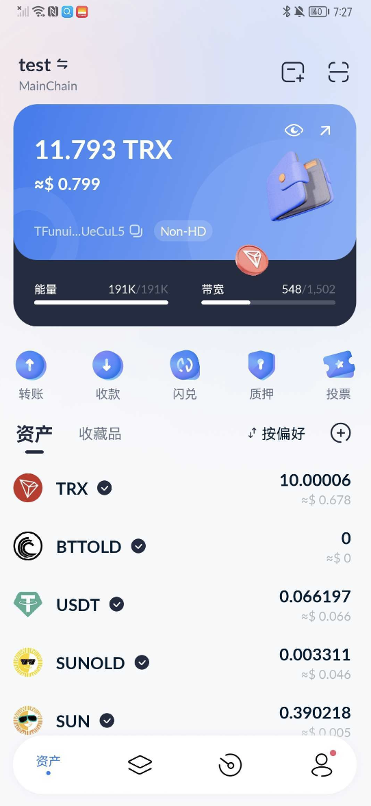
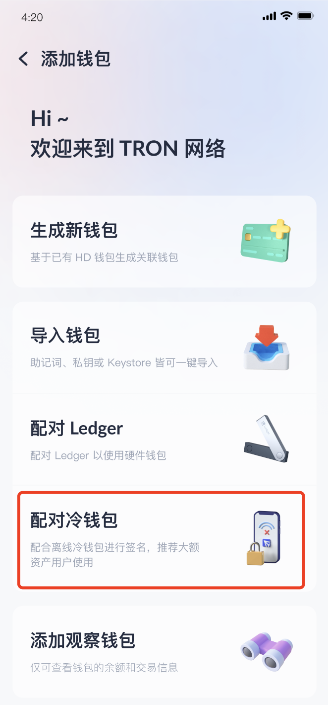
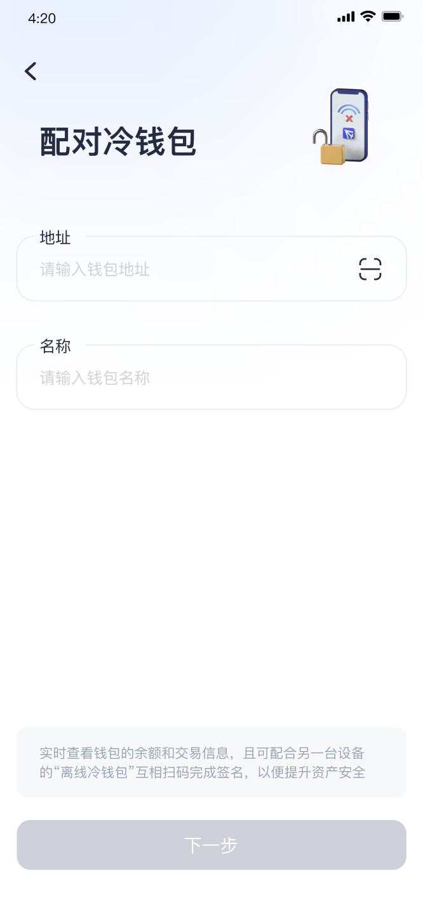
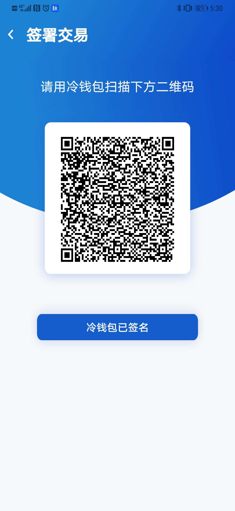
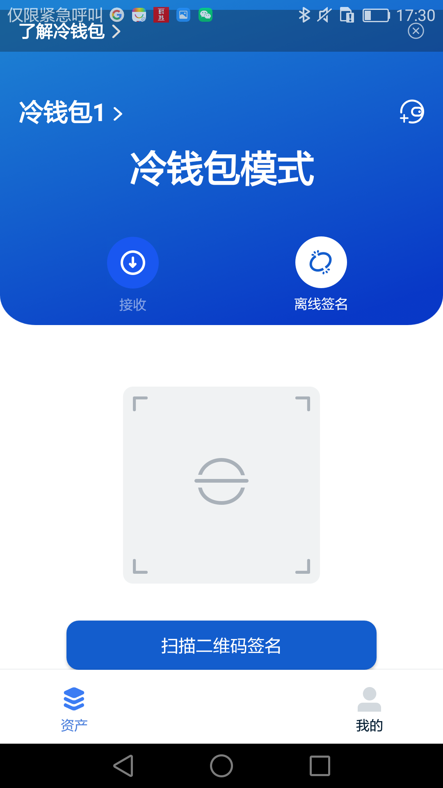

第一步
冷钱包模式：点击接收，展示冷钱包二维码。
第二步
热钱包模式：点击首页右上方的添加钱包按钮—选择配对冷钱包，扫描冷钱包模式的二维码，成功创建该冷钱包的热钱包模式。



第三步
在热钱包模式下-冷钱包下，可以进行钱包内所有支持的交易类型，包括转账，冻结解冻，投票，多重签名等，在生成这些交易后，会跳转至二维码页面。

第四步
在冷钱包模式下，扫描第三步热钱包模式下钱包的二维码，且签名验证，冷钱包模式则出现二维码。

第五步
用热钱包模式扫描冷钱包模式的二维码，交易成功。